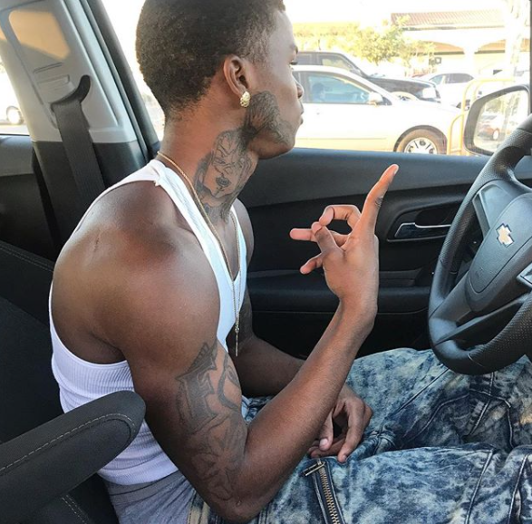
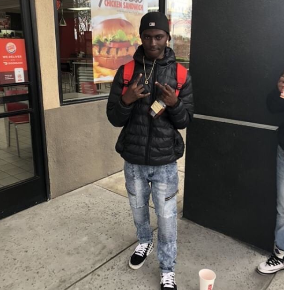
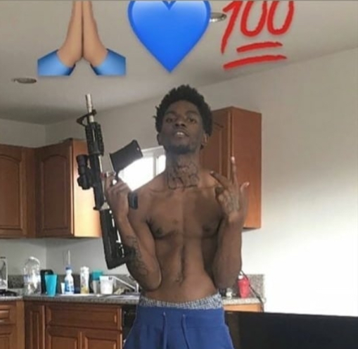
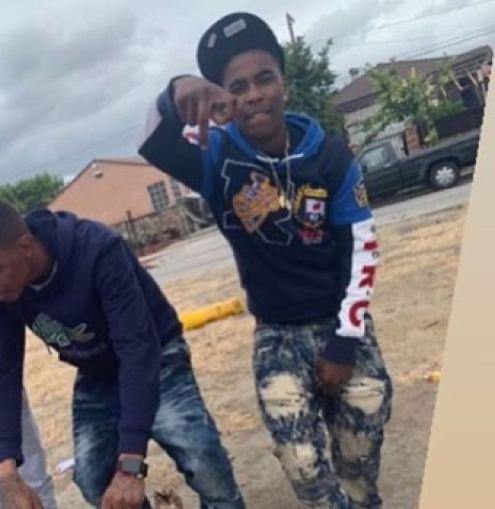
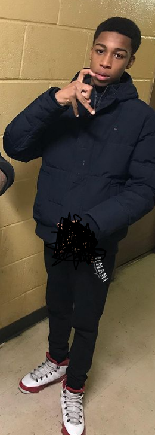
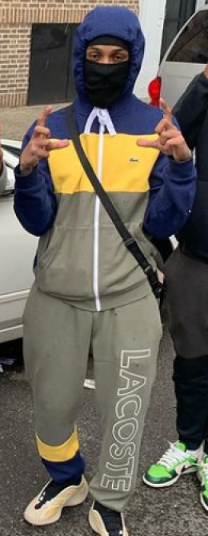
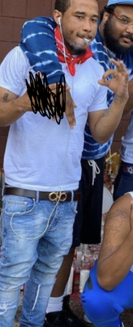
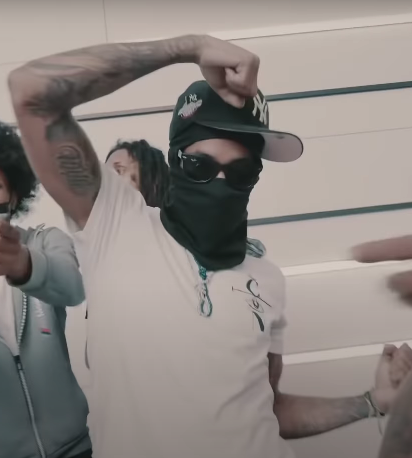

Da Hood Guide
LES GRAFFITIS AU US
Attention : À Los Angeles, l'utilisation de signes de gangs peut être dangereuse. Évitez toute imitation ou association avec ces symboles pour votre sécurité. Respectez les codes de la ville pour éviter tout conflit.
Explications de ce qu'est un gang sign : Un gang signe est une signe représentant un set/gang chaque gang à le siens. Cela peut-être un hand sign ou alors un logo du gang/set tout simplement. Chaque groupe en a un différent tous représentant quelque chose de fort et puissant.
1 - Une manière d'insulter les Bloods pendant un enchaînement de signe, faire un rond avec ses doigts et rentrer son majeur dedans, ou une arme.
2 - La manière la plus commune et de pointer son majeur vers le signe de leurs ennemis, en l'occurence le mec dans la photo ci-dessous disrespect les Bloods.
3 - Le signe universel de tout les Neighborhood Crips, des 40s aux 100s. Trois doigts en l'air ou vers le bas. (L'index, le pouce et le majeur.) Donc les Nine Owe de New-York l'utilise également.
4 - Le signe CK donc pour diss les Crips.
5 - Un 9, plusieurs gangs affiliés aux Crips l'utilisent, les R90 l'utilisent également.
6 - Signe W représentant le mot "Watts/Wvttz" des Watts Grape Street Crips
7 - Signe Universal de Tout les Rollins de tout les USA, le doigts plié en haut de signe représente le pied, le rond la roue et les deux doigts le corps d'un homme sur un fauteuil roulant.
8 - Crip Sign avec le C ouvert utilisé principalement par touts les Rollins et les Watts Grape Street Crips (modifié)
9 - Signe Universal de toutes les affiliations Bloods de tout les USA (Sauf Piru's)
10 - Signe Universal de toutes les affiliations Crips de tout les USA
Il y a pas tous les signe de gang/set, il y en beaucoup plus. Mais sans doute dans la prochaine version du site, il y en aura plus.